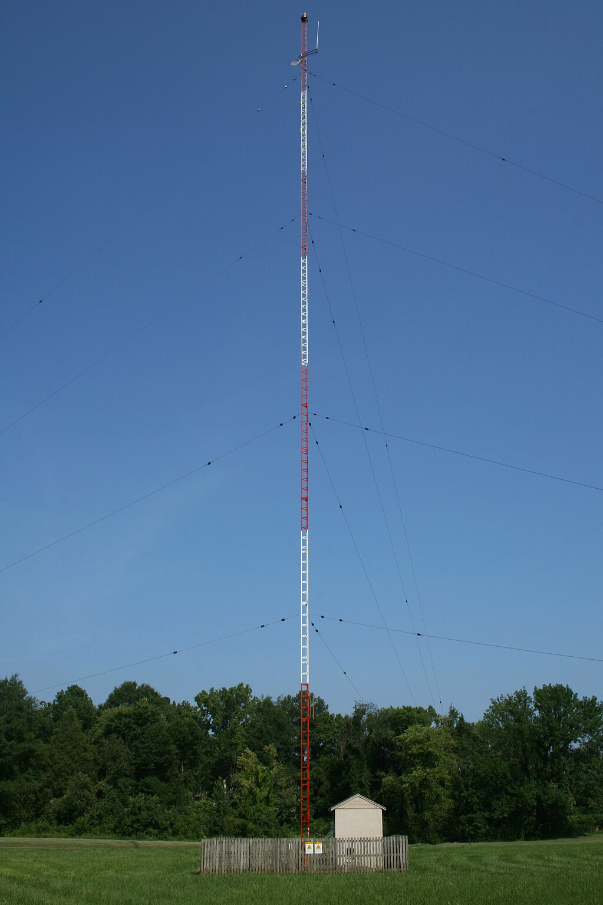
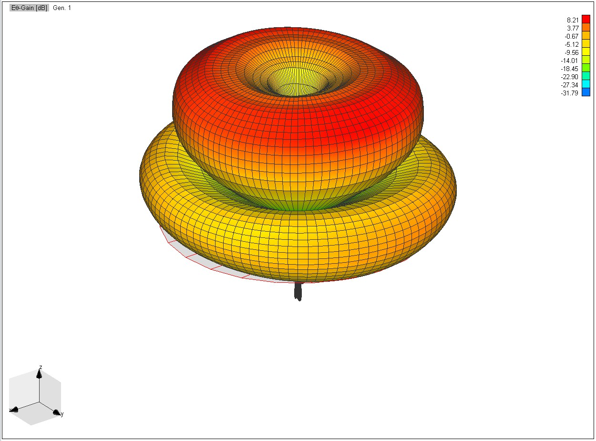
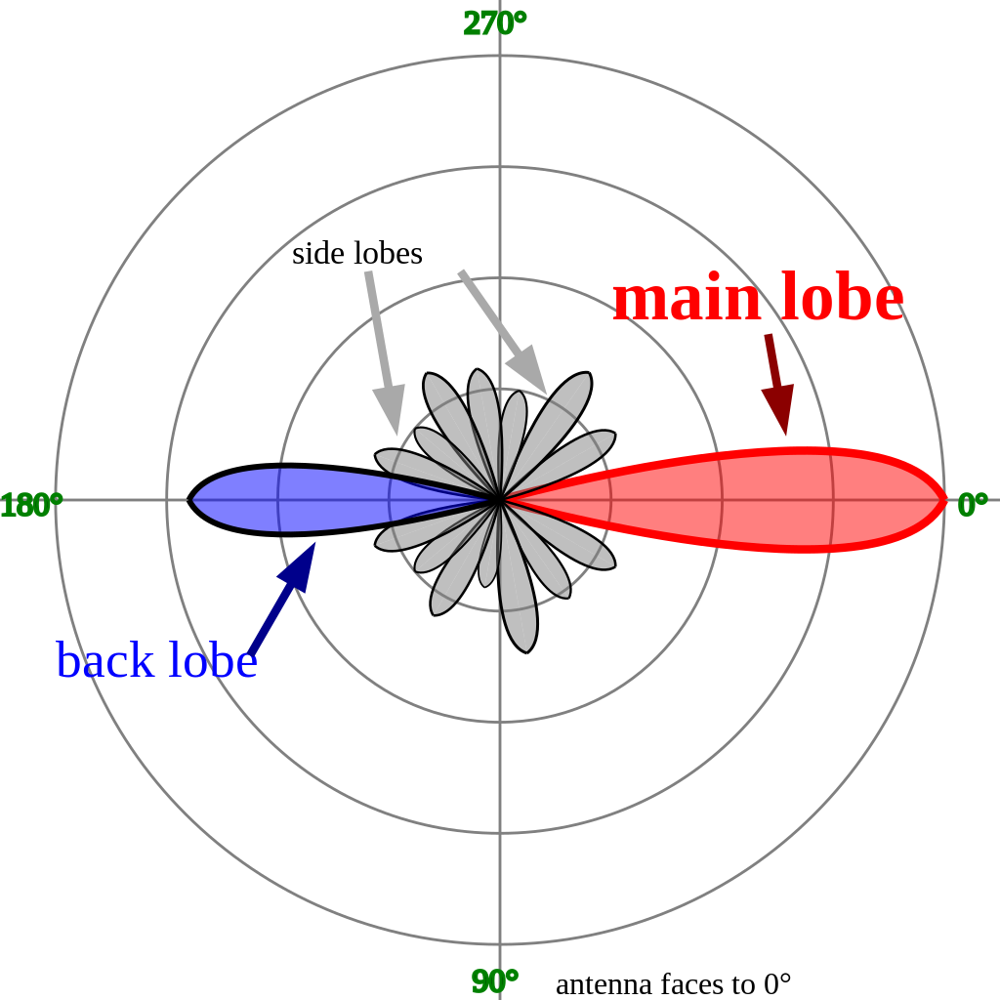
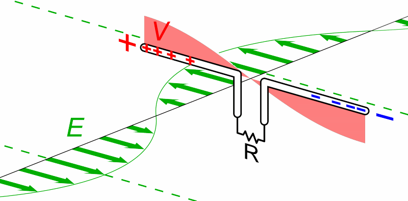
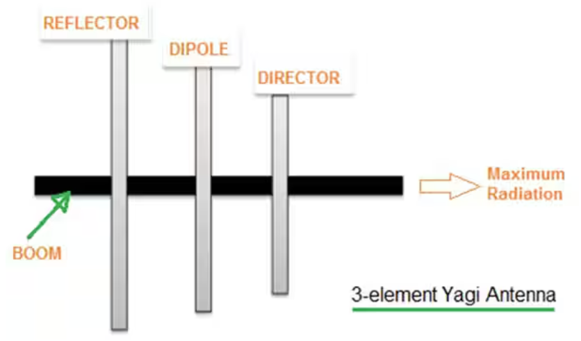
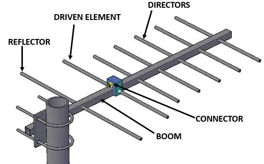
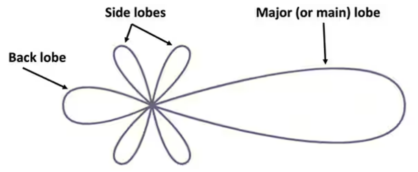
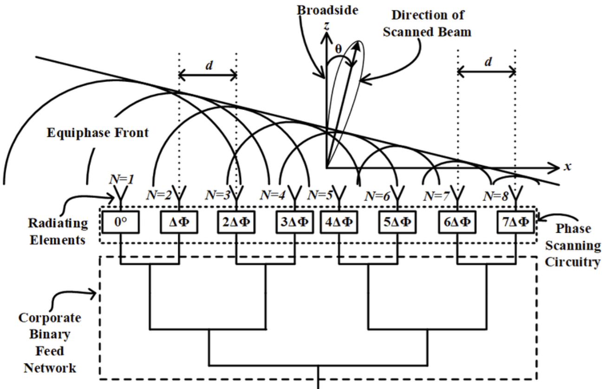
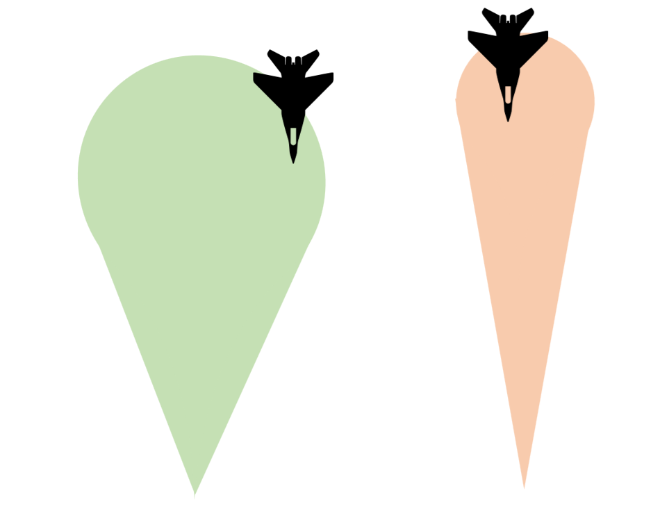
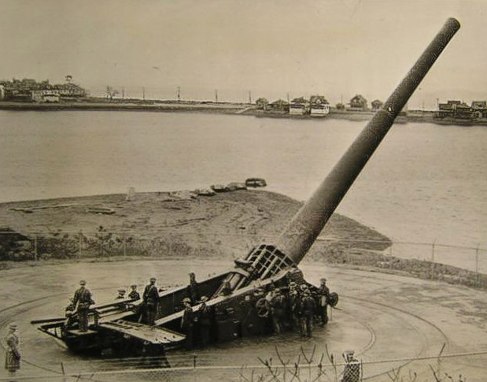

미육군의 레이더 개발 이야기 (2) - lobe는 좁을수록 좋다
게시: 2024-05-23T06:30:00+09:00
<Lobe란 무엇인가?> 뭔가 잎사귀처럼 생긴 형태를 뜻하는 로브(lobe)라는 단어가 전파 관련 용어로 사용되면 안테나의 방사 패턴에서 가장 강력한 영역을 지칭. 대부분의 단순한 안테나는 막대기 모양으로 생겼으므로 라디오 방송처럼 omni-directional, 즉 전방향으로 고르게 전파를 방사하는 안테나조차도 방향과 간섭에 따라 각도에 따른 로브를 가짐.

(omni-directional antenna의 전형적인 예가 시골 길가 벌판에 보이는 저런 막대기형 monopole (단극, 모노폴) 안테나. 수평 방향으로 고르게 전파를 쏘아댐.)

(그러나 omni-directional antenna라고 하더라도, 수직으로 서있으니까 수평방향으로만 고르게 쏘는 것이고 수직 방향에서는 당연히 고르지 않고 저렇게 간섭에 따라 로브가 형성된다고.)

(레이더에서 쏘아대는 전파는 지향성 안테나를 쓰므로 당연히 강력한 로브가 나타남. 그걸 main lobe라고 하는데, 그 외에 간섭 현상에 따라 원치 않는 방향으로도 side lobe는 물론 back lobe까지 나타남.) 초기 레이더는 대개 여러 개의 작은 dipole (쌍극, 다이폴) 안테나를 일렬로 늘어세우고, 그 뒤에 야기(Yagi) 안테나의 가장 중요 요소인 reflector를 붙여서 만들었음. 여기서 reflector라고 하는 것은 반사판이 아니라, 다이폴 안테나보다 약간 더 긴, 아무런 전기 입력이 없는 passive 쇠막대기 안테나인데, 하는 역할은 그 이름처럼 반사판 노릇을 하는 것임. 전파 신호를 방출하는 다이폴 안테나 뒤에 그렇게 reflector를 붙여 놓으면 대부분의 전파는 앞쪽을 향하게 되는데, 그렇게 동기화된 동일한 신호를 방출하는 여러 개의 다이폴 안테나가 일렬로 죽 늘어서 있으면 각각의 안테나에서 나오는 전파들끼리 상호 간섭을 일으켜 커다란 main lobe가 형성됨. 그 main lobe를 원하는 방향으로 조준하면 멀리까지 강력한 전파를 발사할 수 있는 것.

(쌍극자 안테나, 즉 다이폴 안테나의 원리)

(가장 간단한, 3개 요소를 가진 Yagi 안테나의 구성도)

(대부분의 야기 안테나는 저 director라고 부르는 짧은 막대기가 여러 개 달렸음. 그래야 지향성이 더 강해진다고. 야기 안테나의 핵심은 끝에서 2번째가 언제나 전기 신호를 방출하는 active 요소이고, 맨 마지막의 가장 긴 막대기는 reflector 요소라는 것.)

(야기 안테나에서 만들어지는 lobe들)

(이렇게 여러 개의 다이폴 안테나를 평행으로 늘어세우고 동기화된 신호를 한꺼번에 쏘면 보강간섭(constructive interference)에 의해 방향성을 가진 거대 main lobe가 만들어짐. 이 그림은 각각의 안테나 요소에서 일부러 약간의 위상차를 두고 전파를 쏘는 phased array radar의 원리를 보여주는 그림. 이렇게 안테나 요소들간에 위상차를 조절하면 레이더 안테나를 기계적으로 돌리지 않고도 레이더 빔을 좌우로 이동시킬 수도 있음. 그러나 그건 나중에 독일 기술진이 개발한 것.)
<파장과 안테나 array 크기의 상관 관계> 상식적으로 당연히, 그런 main lobe를 좀 더 좁고 길게 만들어야 레이더가 먼 거리까지 탐지가 가능할 뿐만 아니라, 레이더의 방위각 탐지가 더 정확해짐.

(좁은 lobe가 좋은 로브라는 것을 보여주는 그림. 왼쪽의 퍼짐각이 30도인 로브에 전투기가 걸리면, 지금 전투기가 존재할 수 있는 각도가 대충 전방 30도 안쪽 어딘가라는 것만 알 수 있음. 오른쪽의 퍼짐각이 10도인 로브에 전투기가 걸리면, 그 전방 10도 안쪽 어딘가에 전투기가 존재한다는 뜻. 그러니 레이더 안테나를 좌우로 다시 스캔하여 적기의 정확한 위치를 찾아낼 때까지 걸리는 시간은 오른쪽의 좁은 퍼짐각을 가진 레이더가 훨씬 짧게 됨.)
메인 로브의 퍼짐각(angular spread)을 그렇게 더 좁게 만들려면 좌우로 더 많은, 가령 수백 개의 작은 다이폴 안테나를 늘어세우면 됨. 그러나 그런 경우에도 다이폴 안테나 사이의 간격을 무작정 촘촘히 할 수는 없고, 대개 전파 파장만큼의 간격으로 배치해야 했음. 당시 파장이 1.5m 길이를 썼으니, 딱 10개의 다이폴 안테나를 늘어 세우려고 해도 전체 레이더 안테나의 폭은 15m나 된다는 소리.
그래서 상식적인 수준에서 레이더 안테나의 크기를 제한하려면, 결국 메인 로브의 퍼짐각이 꽤 커질 수 밖에 없었음. 당시 미육군 통신사령부에서 연구 중이던 레이더에서도 대충 폭이 10~15m 정도 크기의 레이더 안테나를 생각하고 있었는데, 1.5m 파장으로 그 정도 크기의 레이더 안테나로는 만들 수 있는 메인 로브의 퍼짐각이... 대략 9에서 12도나 되었음. 지난 편에서 해안포가 요구하는 포격 조준용 레이더의 정확도는 2도로도 안 되고 0.2도 이내여야 한다고 했는데, 그에 비하면 터무니 없이 오차 범위가 너무 컸던 것.

(WW2 종전때까지도 사용되었던 미육군의 16인치 해안포 M1919. 포탄 무게만 950kg이고, 이걸 쏘기 위한 장약 무게는 385kg. 이 사진은 보스톤에 설치되었던 것.) 여기서 결국 프로젝트는 실패로 끝났을까? 아님. 인간이 다른 인간을 죽이기 위해 머리 쓰는 것을 보면 가끔씩 소름이 끼침. 결국 해결책을 만들어냄. 그 이야기는 또 다음 주에...